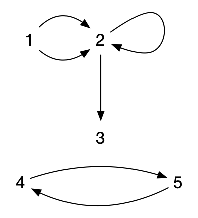
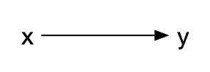
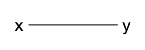
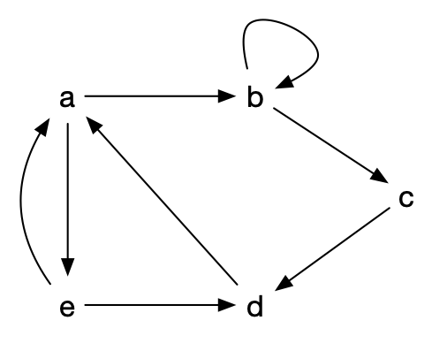
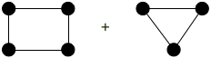
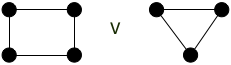

Structure d'un graphe
- François Brucker
Définition de la structure de graphe et de ses composants (sommets et arêtes). On terminera cette partie en démontrant une première propriété fondamentale les liant.
Définition générale
Dans toute sa généralité, on peut définir un multi-graphe comme étant un triplet $G = (V, E, \phi)$ où :
- $V$ est un ensemble de sommets (vertices)
- $E$ est un ensemble d'arcs (edges)
- $\phi: E \rightarrow V \times V$ une fonction d'incidence qui associe à chaque arête un couple (possiblement égaux) de sommets.
Cette définition permet de considérer des ensemble a priori infini, mais elle le fait au prix d'une grosse lourdeur de manipulation puisqu'il faut passer par une fonction d'incidence.
En pratique, on aura toujours un nombre fini de sommets et d'arêtes, on choisit donc une définition plus restrictive, mais plus facilement manipulable en informatique :
Définition
Un multi-graphe est un couple $G = (V, E)$ où :
- $V$ est un ensemble fini de sommets (vertices)
- $E$ est une liste finie de d'éléments de $V \times V$ appelés arcs (edges)
Exemple
Le multi-graphe $G = (V, E)$ avec :
- $V = \{1, 2, 3, 4, 5\}$
- $E = ((1, 2), (2, 3), (2, 2), (1, 2), (4, 5), (5, 4))$
Peut se représenter graphiquement (sur le plan) :

Remarquez qu'un multi-graphe peur avoir :
- plusieurs fois le même arc : l'arc $(1, 2)$
- des boucles : l'arc $(2, 2)$
Utilité
Les multi-graphes sont des outils puissants de modélisation permettant de résoudre nombre de problèmes d'optimisation.
Résolution de problème
Outre le problème évident de construction ou de maintien de réseaux (informatique, de transports ou encore sociaux), on peut aussi citer :
- google maps. On cherche un itinéraire entre deux villes en ne connaissant à priori que ce qui se passe entre deux croisement consécutifs, mais on connaît tous les croisements,
- les contraintes d'allocations de ressources. Les sommets sont les antennes et les arêtes si il y a des interférences possibles, on cherche à trouver une coloration du graphe,
- problèmes de transports où l'on veut distribuer le plus de ressources possibles dans un réseau routier/fluvial/informatique,
Les problèmes ci-dessus ont ceci de particulier qu'ils peuvent très facilement se décrire localement :
- le problème de la recherche d'itinéraire se décrit par une liste de croisement et, pour chaque croisement, une liste de ceux qu'il peut atteindre
- le problème d'allocation de ressources se décrit de même par une liste d'antenne et, pour chaque antenne, une liste de celles avec laquelle il y a interférence possible
- enfin, le problème de transport se décrit de la même manière que le problème d'itinéraire en ajoutant une capacité à chaque couple de croisement)
Mais la solution cherchée est globale :
- une suite de croisement pour le problème d'itinéraire
- une fréquence à associer à chaque antenne pour le problème d'allocation de ressources
- un flot sur chaque route pour le problème de transport
C'est une caractéristique générale :
Un problème pouvant se décrire localement mais dont la solution est globale peut souvent se modéliser puis se résoudre à l'aide de graphes.
Modélisation
Ils permettent également de comprendre le réel en utilisant des classes particulières de multi-graphes. Par exemple :
- le modèle arboré des arbres phylogénétique modélisent l'évolution des espèces
- des graphes aléatoire générés en utilisant par exemple le modèle de Barabasi-Albert permettent de créer des graphes "petit monde" typiques des réseaux sociaux ou de l'internet.
Esthétique
Enfin, ils procurent une satisfaction purement esthétique de part la grande beauté des démonstrations de leurs théorèmes et de leurs algorithmes.
Graphe
Notre définition est tellement générale, qu'elle est très peu utilisée telle quelle. On utilisera souvent des cas particuliers selon le problème que l'on veut résoudre :
- sans boucles. Les arcs commencent et finissent toujours sur nœuds différents.
- sans arcs multiples. On a alors que pour $G = (V, E)$, $E$ est un sous-ensemble de $V \times V$ : c'est une relation.
- non orienté. Si $(x, y) \in E$ alors $(y, x) \in E$.
Ainsi, un multi-graphe non orienté sans boucle est un multigraphe tel que si $(x, y) \in E$ alors $(y, x) \in E$ et tel que $(x, x) \notin E$ pour tout $x \in V$.
Le cas le plus simple (et donc celui que l'on utilisera en priorité) est le multi-graphe sans boucle, sans arcs multiples et non orienté. On les appelle graphes et on peut les définir comme suit :
Définition :
Un graphe est un couple $G = (V, E)$ où :
- $V$ est un ensemble fini
- $E$ est un sous-ensemble de $\{ \{x, y\} \mid x \neq y \in V \}$. Ses éléments sont appelés arêtes.
De cette définition minimale on pourra alors définir d'autres cas, comme le graphe orienté :
Définition :
Un graphe orienté est un multi-graphe sans boucle et sans arcs multiples. C'est un couple $G = (V, E)$ où :
- $V$ est un ensemble fini
- $E$ est un sous-ensemble de $\{ (x, y) \mid x \neq y \in V \}$
Enfin, plus rarement, vous pourrez rencontrer des graphe mixte qui permettent de rendre compte de situations réelles comme lorsque l'on modélise des réseaux routiers où il existe à la fois des routes à doubles sens et à sens unique et où l'on ne veut parcourir une route qu'une seule fois (pas une fois dans un sens et une fois dans l'autre pour les routes à double sens) :
Définition :
Un graphe mixte est un triplet $G= (V, E, A)$ tel que $G_1=(V, E)$ soit un graphe non orienté et $G_2=(V, A)$ soit un graphe orienté.
Ou toutes les combinaisons de ceux-ci, comme :
- le graphe avec arêtes multiples
- le graphe avec boucles
- un multi-graphe mixte orienté
- ...
Il est important de connaître précisément de quels type de graphe on parle car les algorithmes ne fonctionnent pas toujours sur toutes les classes de graphes.
Vocabulaire
Par abus de langage on écrira $xy$ pour designer une arête (resp. arc) plutôt que $\{x, y\}$ (resp. $(x, y)$).
Taille et ordre
Pour un graphe (orienté ou non) $G = (V, E)$ on appelle :
- $\vert V\vert = n$ l'ordre de $G$.
- $\vert E \vert = m$ la taille de $G$.
A ordre fixe, les graphes de taille maximum son dit complet :
Définition
Un graphe est complet s'il possède toutes les arêtes : pour tous $x, y \in V$ $xy$ est une arête. On le note $K_n$ et $m = n(n-1)/2$.
On peut noter qu'un graphe orienté ayant un nombre maximum d'arêtes est en fait un graphe (non orienté) complet. C'est pour cela que la définition d'un graphe orienté complet n'existe pas. On préfère parler de tournoi :
Définition
Un tournoi est un graphe orienté $G=(V, E)$ tel que :
- si $xy \in E$ alors $yx \notin E$
- pour tous $x \neq y \in V$, soit $xy$ soit $yx$ est un arc de $G$.
Arcs
Un arc $xy$ est un élément de $E$ pour les graphes orientés. On le représente graphiquement comme ça :

Quelques notations et définitions relatives aux arcs :
Définitions
- $x$ est l'origine de l'arc,
- $y$ est la destination de l'arc.
On appelle voisinage sortant de $x$ (neighbors) l'ensemble des arcs d'origine $x$ et on le note :
$$N^+(x) = \{ y \mid xy \in E\}$$
Son cardinal est appelé degré sortant de $x$ et est noté :
$$\delta^+(x) = \vert N^+(x) \vert$$
De la même manière, l'ensemble des arcs de destination $y$ est appelé voisinage entrant en $y$ et est noté :
$$N^-(y) = \{ x \mid xy \in E\}$$
Son cardinal est appelé degré entrant de $y$ et on le note :
$$\delta^-(y) = \vert N^-(y) \vert$$
Arêtes
Une arête $xy$ est un élément de $E$ pour les graphes non orienté. On la représente graphiquement comme ça :

Contrairement aux arcs, il n'y a pas de distinction entre origine et destination :
Définitions
Le voisinage d'un sommet $x$ est l'ensemble des sommets $y$ tels que $xy \in E$. ON le note :
$$N(x) = \{ y \mid xy \in E\}$$
Le cardinal d'un voisinage est appelé degré. On le note :
$$\delta(x) = \vert N(x) \vert$$
Voisinages et arêtes
Nous allons présenter une première relation fondamentale pour les graphes. Cette propriété va lier une notion locale : les voisinages de sommets, à une notion globale : le nombre d'arêtes du graphe.
Avant d'énoncer la propriété, commençons par le visualiser. Considérons le graphe orienté avec boucles suivant :

On a par exemple :
- $N^+(a) = \{ b, e \}$,
- $\delta^+(b) = \delta^-(b) = 2$.
Calculez $\sum_x \delta^+(x)$ ? et $\sum_x \delta^-(x)$
solution
solution
$$\sum_x \delta^+(x) = \delta^+(a) + \delta^+(b) + \delta^+(c) + \delta^+(d) + \delta^+(e) = 2 + 2 + 1 + 1 + 2 = 8$$
$$\sum_x \delta^-(x) = \delta^-(a) + \delta^-(b) + \delta^-(c) + \delta^-(d) + \delta^-(e) = 2 + 2 + 1 + 2 + 1 = 8$$
On remarque que la boucle en $b$ est comptée pour $\delta^-(b)$ et pour $\delta^+(b)$.
On peut également remarquer que $\sum_x \delta^+(x) = \sum_x \delta^-(x) = \vert E \vert$.
On voit que $\sum_x \delta^+(x) = \sum_x \delta^-(x)$et vaut le nombre d'arcs du graphe orienté avec boucle.
Cette constatation va — peu ou prou — s'étendre aux graphes. Une version non orienté du graphe orienté avec boucles précédent pourrait être :

On a :
- $\delta(a) = 3$,
- $N(a) = \{b, d, e \}$.
Calculez $\sum_x \delta(x)$
solution
solution
$$\sum_x \delta(x) = \delta(a) + \delta(b) + \delta(c) + \delta(d) + \delta(e) = 3 + 2 + 2 + 3 + 2 = 12$$
On peut remarquer que $\sum_x \delta(x) = 2\vert E \vert$.
On peut maintenant démontrer :
Propriété
Pour un graphe orienté avec boucle $G=(V, E)$, on a la propriété suivante :
$$ \sum_x \delta^+(x) = \sum_x \delta^-(x) = \vert E \vert$$
Pour un graphe $G=(V, E)$, on a :
$$ \sum_x \delta(x) = 2\vert E \vert$$
Preuve
Preuve
Pour un graphe orienté avec boucle, chaque arc $uv$ est unique. Il est compté exactement 1 fois dans la somme $\sum_x \delta^+(x)$ (pour $\delta^+(u)$), donc $\sum_x \delta^+(x) = \mid E \mid$.
Pour un graphe, chaque arête $uv$ est unique et est comptée 2 fois dans la somme $\sum_x \delta(x)$ (une fois pour $\delta(u)$ et une fois pour $\delta(v)$), donc $\sum_x \delta^+(x) = 2 \mid E \mid$.
Parties de graphes
On a parfois envie de découper un graphe pour en étudier une partie (s'il est trop gros ou que certains sommet et/ou arêtes ne nous intéresse pas) ou au contraire de rabouter plusieurs graphes entres eux pour en former un plus gros.
Découpage
Il existe deux façons canonique de découper un graphe, supprimer soit des sommets, soit des arêtes :
Définitions
Soit $G = (V, E)$ un (multi-)graphe (non) orienté.
- si $V' \subsetneq V$, $\left.G\right|_{V'} = (V', V' \times V' \cap E)$ est un sous-graphe de $G$ induit par $V'$.
- si $E' \subsetneq E$, $\left.G\right|_{E'} = (V, E')$ est un graphe partiel de $G$ induit par $V'$.
- si $V' \subsetneq V$ et $E' \subsetneq E$ $\left.G\right|_{(V', E')} = (V', V' \times V' \cap E')$ est un sous-graphe partiel de $G$ induit par $V'$ et $E'$.
Et si on a besoin de supprimer les deux :
Définition
Soit $G = (V, E)$ un (multi-)graphe (non) orienté. Si $V' \subsetneq V$ et $E' \subsetneq E$ $\left.G\right|_{(V', E')} = (V', V' \times V' \cap E')$ est un sous-graphe partiel de $G$ induit par $V'$ et $E'$.
Composition de graphes
Coller plusieurs graphes ensemble pour en former un plus gros peut se faire de multiples façons. Nous allons en montrer trois, classiques, mais il doit en exister bien d'autres.
Commençons par la plus simple, qui ne rajoute aucune arête entre les deux graphes que l'on compose :
Définition
Soient $G_1 = (V_1, E_1)$ et $G_2 = (V_2, E_2)$ deux graphes. On note $G_1 + G_2$ le graphe :
$$G_1 + G_2 = (V_1 \cup V_2, E_1 \cup E_2)$$
Que vaut :

Solution
Solution

On peut aussi utiliser l'approche opposée, qui consiste à ajouter toutes les arêtes possibles entre les deux graphes :
Définition
Soient $G_1 = (V_1, E_1)$ et $G_2 = (V_2, E_2)$ deux graphes. On note $G_1 \vee G_2$ la liaison forte entre $G_1$ et $G_2$. C'est le graphe :
$$G_1 \vee G_2 = (V_1 \cup V_2, E_1 \cup E_2 \cup { xy \mid x \in V_1, y \in V_2})$$
Que vaut :

Solution
Solution

Enfin, de façon plus subtile :
Définition
Soient $G_1 = (V_1, E_1)$ et $G_2 = (V_2, E_2)$ deux graphes. On note $G_1 \square G_2$ le produit cartésien entre $G_1$ et $G_2$. C'est le graphe :
$$G_1 \square G_2 = (V_1 \times V_2, E)$$
Avec $((x_1, x_2), (y_1, y_2)) \in E$ si :
- $x_2 = y_2$ et $x_1y_1 \in E_1$
- $x_1 = y_1$ et $x_2y_2 \in E_2$
Que vaut :

Solution
Solution

On peut aussi chercher l'approche inverse qui consiste à décomposer un graphe donné. C'est très efficace sur les graphes "en pattern" :
La grille 2D est le produit cartésien de deux graphes, lesquels ?

Solution
Solution

Ce n'est cependant pas toujours aussi simple :
Le graphe suivant est le produit cartésien de deux graphes, lesquels ?

Solution
Solution